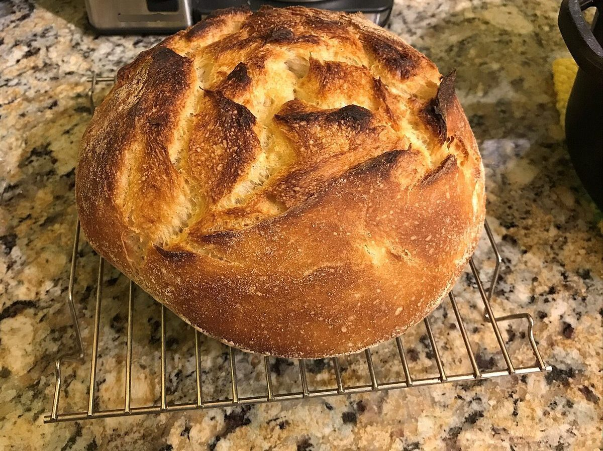

ベーカリー / 高知県南国市
ペロリ

制作側の連想
「ペロリ」から、棚札を五枚。
店名の由来は分かりません。制作側は「ペロリ」という響きから、「ぺろりと平らげる」ということば、つまりパンが棚から消えていくような様子を連想しました。そこでこのサイトは、パン屋の棚に下げる「札」の形をテーマにしています。札は「しこみ・ふくらむ・こんがり・ならぶ・ぺろり」の五枚です。制作側の連想で、お店の理念・由来とは無関係です。
五枚の札(イメージ)
パンのひと巡りを、札で並べて。
写真はお店の商品ではなく、国外・撮影地不明のフリー素材のイメージです。お店で提供しているものを示すものではありません。
- 1しこみ

撮影地不明のイメージ 生地のかたまり
- 2ふくらむ

撮影地不明のイメージ 生地がふくらむ
- 3こんがり

撮影地不明のイメージ 焼き色がつく
- 4ならぶ

撮影地不明のイメージ ならぶ前のひと休み
- 5ぺろり

撮影地不明のイメージ 切り分けて、ぺろり
ご案内
お店のこと(確認できたものだけ)
| 所在地 | 〒783-0081 高知県南国市片山１４０２−１ |
|---|---|
| 電話 | 088-821-8563 |
| 営業時間 | 準備中 |
| 定休日 | 準備中 |
| ご予約 | 準備中 |
| 駐車場 | 準備中 |
| SNS | Instagram @matipan_perori |